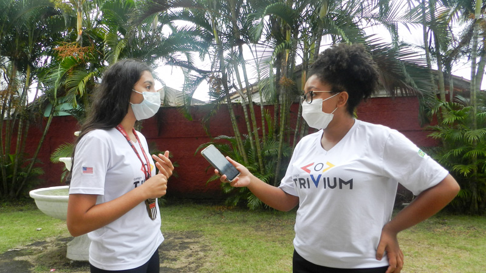
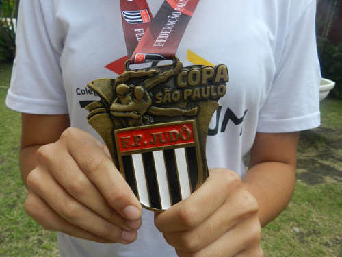

Mariana Antunes
Reportagem

Bianca Carrilho
Fotos
25 de Fevereiro de 2022
Lara Mantovani, estudante do Colégio Trivium em parceria com a Prefeitura de Praia Grande, participou da Copa São Paulo de Judô em São Bernardo do Campo, sendo ganhadora da medalha de primeiro lugar.
Em entrevista, Lara conta sobre as emoções de ganhar em primeiro lugar e se superar lutando contra uma rival que ja havia lutado antes. "Desde muito nova me interessei pelo Judô por ter na escola, depois fui aprender pelo governo que incentiva o esporte.
Estar em uma nova liga (sub 15), lutar contra uma rival para a qual eu já havia perdido antes e levar a vitória a minha cidade, fez com que eu ficasse super feliz!" diz em entrevista.
Assim como Lara, outras pessoas da cidade também foram participar do campeonato, trazendo a vitória de 3° lugar para Praia Grande.